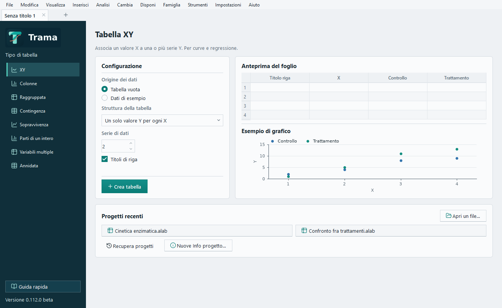
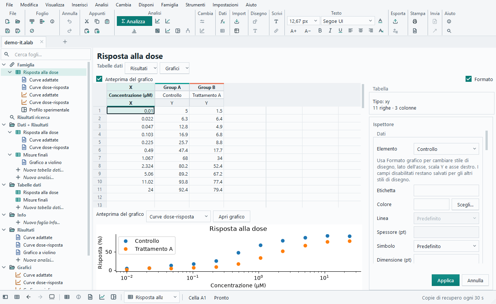
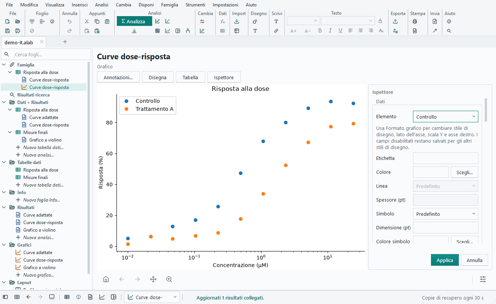
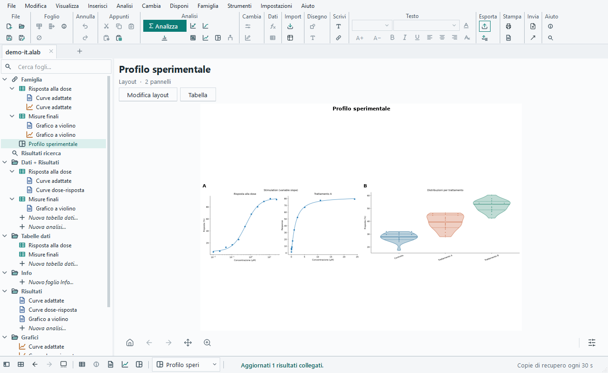
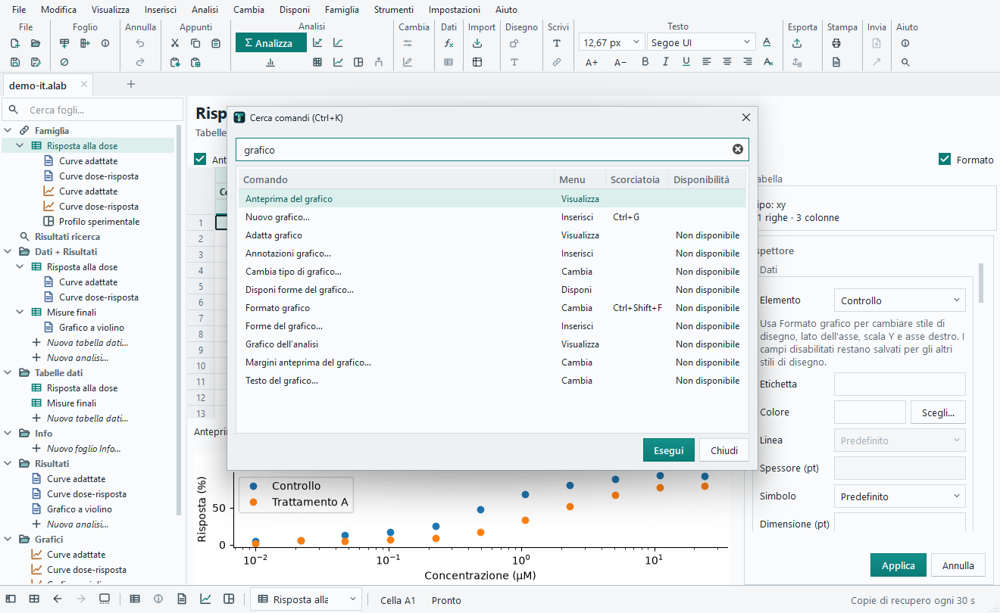
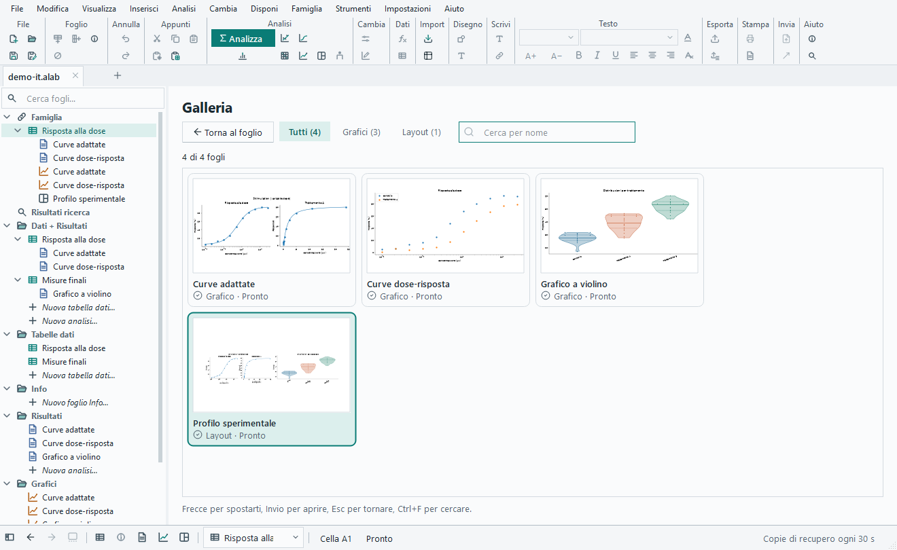
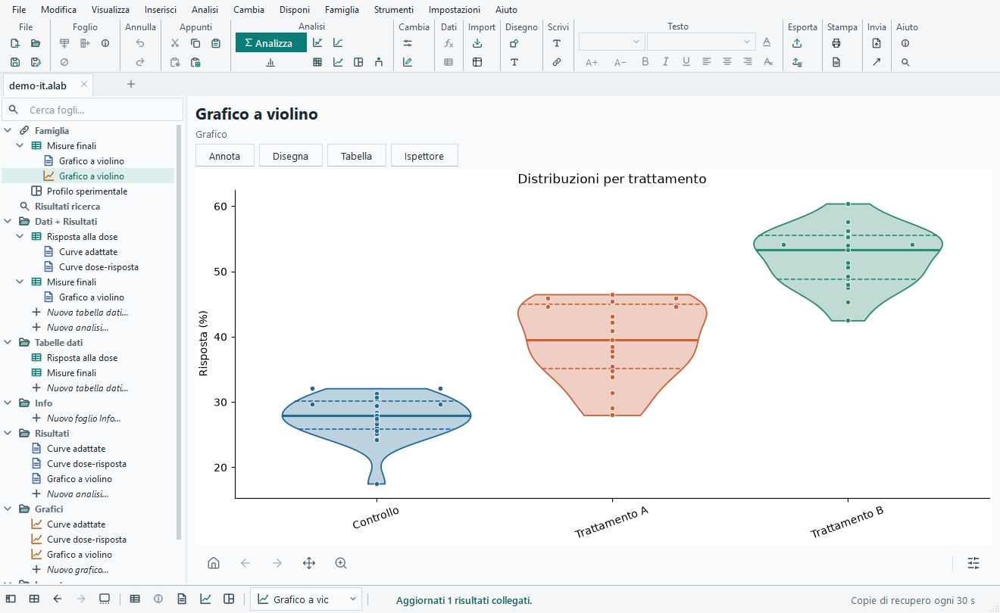

Confrontare esperimenti
Test t (anche lognormali e di equivalenza TOST), test di rango esatti, ANOVA, misure ripetute, modelli misti REML e confronti multipli.
Trama riunisce fogli dati, analisi statistiche e grafici scientifici in un programma per Windows. Incolla da Excel, scegli il metodo, rifinisci la figura ed esporta in SVG o PDF. È gratuito, open source e non si installa.
Quattro passaggi veri, ripresi dalla 0.112.0 con dati sintetici.







Ogni punto ha una verifica che puoi aprire. La copertura è ancora parziale e lo diciamo più sotto.
Nessun costo, abbonamento o numero di postazioni. Licenza MIT: usalo, studialo e modificalo, anche nel lavoro professionale.
Verifica: licenza MITEstrai la cartella ZIP e apri Trama.exe. Niente Python da installare, nessun account, nessuna chiave di attivazione.
Il codice del programma non importa moduli di rete: niente telemetria, sincronizzazione o controllo di licenza online.
Verifica: cerca urllib e socketNel caso semplice un progetto .alab è testo JSON: lo apri con qualsiasi editor e lo confronti con un diff.
Un test esatto dice quando è passato all’approssimazione e perché. Un intervallo non calcolabile viene spiegato, non riempito.
Verifica: mappa delle funzionalitàModifichi un valore e le analisi collegate si ricalcolano. Una cella esclusa resta nel foglio e non entra nel calcolo.
Verifica: primo esperimentoSei famiglie di strumenti dallo stesso foglio.
Test t (anche lognormali e di equivalenza TOST), test di rango esatti, ANOVA, misure ripetute, modelli misti REML e confronti multipli.
118 equazioni a catalogo, equazioni personalizzate e condizionali, fit globali, pesi, confronto AICc, calibrazione, spline e LOWESS.
PCA con biplot, K-means con resoconti per ogni k, clustering gerarchico con dendrogrammi, matrici di correlazione e mappe di calore.
Kaplan–Meier, Cox e rischi competitivi, curve ROC con confronto di DeLong, Bland–Altman, Passing–Bablok, regressioni multiple e logistiche.
Formule nel foglio, trasformazioni, normalizzazione, area sotto la curva, dati collegati a CSV e studi Monte Carlo con seme riproducibile.
Grafici XY e a colonne, box e violino, forest e bolle, annotazioni, layout fino a 12 pannelli ed esportazione in SVG e PDF.
Meglio saperlo prima di scegliere.
Sì. Trama è distribuito con licenza MIT: nessun costo, abbonamento o numero di postazioni, anche per l’uso professionale.
Sì. Puoi incollare da Excel e importare file CSV, TSV, TXT e XLSX. Un foglio può restare collegato al suo CSV o TSV e aggiornarsi con File → Aggiorna da file…
Su Windows 10 e 11 a 64 bit, con uno schermo di almeno 1024 × 768 pixel. Estrai lo ZIP e apri Trama.exe: niente Python, account o chiave di attivazione.
Trama è una beta con copertura parziale, senza validazione clinica né certificazione regolatoria. Verifica sempre i risultati: i limiti sono scritti qui e nelle note di ogni versione.
Circa cinque minuti, senza installare nulla.
Trama-0.112.0-Windows-x64.zip dalla pagina delle versioni, non l’archivio del sorgente._internal accanto all’eseguibile e apri Trama.exe.Gratuito, portabile, in italiano e in inglese.